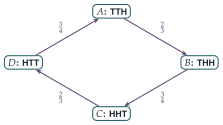

STEP III 2001, 문제 13
계속 읽기 전에 문제를 먼저 읽어 보자. 문제는 STEP Support Programme의 문제 데이터베이스에 있다: step.maths.org/questions/01-s3-q13
도입
여러분과 친구가 각자 동전 세 번 던지기의 결과로 이루어진 수열을 하나씩 고르고, 둘 중 한 수열이 나타날 때까지 동전을 계속 던진다고 하자. 어느 순간에나 세 번 던지기의 모든 수열은 나타날 확률이 같으므로, 어떤 수열을 고르든 똑같이 유리하지 않을까? 전혀 그렇지 않다. 친구가 어떤 수열을 고르든, 여러분은 그것을 이기는 수열을 고를 수 있으며, 때로는 그 승산이 \(7\) 대 \(1\)에 이른다.
이것이 1969년 Walter Penney가 고안한 페니 게임(Penney’s game)이다. 이 문제는 \(A\)가 \(B\)를 이기고, \(B\)가 \(C\)를 이기고, \(C\)가 \(D\)를 이기고, \(D\)가 \(A\)를 이긴다는 것을 보여 준다. 가위바위보처럼 순환이 생기는 것이다. “이긴다”는 관계는 추이적(transitive)이지 않다. 나중에 고르는 사람은 장기적으로 언제나 이길 수 있다.
시작하기 전에
지금까지 던진 결과가 TT로 끝났고 아직 아무도 이기지 않았다고 하자. THH가 TTH보다 먼저 나타날 수 있을까?
TT에서 T가 더 나올 때마다 마지막 두 결과는 계속 TT이고, 처음 나오는 H가 TTH를 완성한다. THH가 나타나려면 TH가 필요한데, 이는 T 다음에 H가 나올 때만 생기며, 그 H는 이미 TTH를 완성한다. 따라서 일단 TT가 나오면 \(A\)가 이긴다.
차근차근 풀기
단계 1 상태
두 번 던져서는 어느 수열도 완성될 수 없다. 두 번 던진 뒤, 각 상태에서 다음 한 번의 던지기는 어떤 결과를 가져오는가?
게임은 마지막 두 결과에만 의존하므로, 상태(state)(마지막 두 결과)를 추적하면 된다.
TT에서: \(A\)가 이기므로(위에서 보였다) \(p_{\mathrm{TT}} = 1\)이다.
HT에서: 다음 던지기에서 TH 또는 TT가 되므로 \(p_{\mathrm{HT}} = \frac12p_{\mathrm{TH}} + \frac12p_{\mathrm{TT}}\)이다.
TH에서: H가 나오면 THH가 완성되고(\(B\)가 이긴다), T가 나오면 HT가 된다. 따라서 \(p_{\mathrm{TH}} = \frac12 \cdot 0 + \frac12p_{\mathrm{HT}}\)이다.
HH에서: H가 나오면 다시 HH가 되고, T가 나오면 HT가 된다. 따라서 \(p_{\mathrm{HH}} = \frac12p_{\mathrm{HH}} + \frac12p_{\mathrm{HT}}\)이고, 이로부터 \(p_{\mathrm{HH}} = p_{\mathrm{HT}}\)를 얻는다.
단계 2 풀기
\(p_{\mathrm{TH}} = \frac12p_{\mathrm{HT}}\)를 HT에 대한 식에 대입하면 \(p_{\mathrm{HT}} = \frac14p_{\mathrm{HT}} + \frac12\)이므로 \(p_{\mathrm{HT}} = \frac23\), \(p_{\mathrm{HH}} = \frac23\), \(p_{\mathrm{TH}} = \frac13\)이다. 네 가지 시작 상태는 각각 확률이 \(\frac14\)이므로 \[\mathrm{P}(A \text{ 가 이김}) = \tfrac14\bigl(\tfrac23 + \tfrac23 + \tfrac13 + 1\bigr) = \tfrac23. \qed\]
단계 3 \(B\) 대 \(C\)
\(C\)는 HHT를, \(B\)는 THH를 원한다. \(C\)는 언제 이기는가? (처음 나오는 HH 바로 앞에 무엇이 와야 하는지 살펴보라.)
처음 두 결과가 HH이면, 그 뒤 처음 나오는 T가 THH가 나타나기 전에 HHT를 완성하므로 \(C\)가 이긴다. 그렇지 않으면 HH가 처음 나타나기 전 어딘가에 T가 있으므로, 처음 나오는 HH 바로 앞에는 T가 있다. 그 순간 THH가 나타나며, 이는 HHT(HH 뒤에 T가 필요하다)보다 먼저이다. 따라서 \(C\)는 게임이 HH로 시작할 때만 이긴다. \[\mathrm{P}(B \text{ 가 이김}) = \tfrac34. \qed\]
단계 4 순환
같은 방법(또는 “숨은 수학” 절의 지름길)을 쓰면, \(C\)(HHT)가 \(D\)(HTT)를 확률 \(\frac23\)으로 이기고, \(D\)(HTT)가 \(A\)(TTH)를 확률 \(\frac34\)로 이긴다는 것을 알 수 있다. 마지막 것은 앞면과 뒷면을 바꾼 3단계의 거울상이다. 따라서 \[A \text{ 는 다음을 이긴다: } B, \qquad B \text{ 는 다음을 이긴다: } C, \qquad C \text{ 는 다음을 이긴다: } D, \qquad D \text{ 는 다음을 이긴다: } A. \qed\]

돌아보기
알맞은 상태를 고른다. 마지막 두 결과만 중요했으므로, 네 개의 상태와 네 개의 방정식으로 게임 전체를 나타낼 수 있었다.
첫걸음 분석. 각 방정식은 다음 던지기를 조건으로 하였다. 한 상태에서의 확률은 다음 던지기가 이끄는 곳들에서의 확률의 평균이다.
결정적인 사건을 찾는다. 3단계에서는 “처음 나오는 HH 앞에 T가 있다”는 사실이 방정식 없이 게임의 승부를 결정했다.
숨은 수학
어떤 수열이 더 유리한 이유
세 번 던지기의 모든 수열은 주어진 어느 위치에서나 나타날 확률이 같고, 각 수열이 나타날 때까지의 기대 대기 시간은 쉽게 계산할 수 있다. 그러나 대기 시간은 서로 다르다. TTH는 평균 \(8\)번, TTT는 평균 \(14\)번을 기다려야 하는데, 자기 자신과 겹치는 수열(TTT처럼, 아깝게 빗나간 TTH가 두 번 던지기만큼의 진행을 망쳐 버리는 경우)은 늦게 나타나기 때문이다. 그리고 두 수열의 경주에서 중요한 것은 각 수열이 상대 수열과 어떻게 겹치느냐이다. THH가 HHT를 이기는 까닭은, HHT가 나타날 때마다(맨 처음인 경우를 제외하고) 그 앞에 T가 있고, 이는 THH가 막 나타났다는 뜻이기 때문이다. 두 번째 선수의 비결은 언제나 같다. 상대 수열의 처음 두 기호를 가져와서, 그 앞에 상대 수열의 가운데 기호와 반대인 기호를 붙이면 된다.
콘웨이의 공식
콘웨이(John Conway)는 승산에 대한 놀라운 공식을 발견했다. 길이가 \(n\)인 두 수열 \(X\)와 \(Y\)에 대하여 상관(correlation) \(XY\)를 \(n\)자리 이진수로 정의한다. 왼쪽부터 읽을 때, \(X\)의 \(i\)번째 기호에서 시작하는 부분이 같은 길이의 \(Y\)의 앞부분과 같으면 \(i\)번째 자리를 \(1\)로 둔다. 그러면 \(Y\)가 \(X\)보다 먼저 나타날 승산은 \[(XX - XY) : (YY - YX).\] 이다. \(X =\) HHT, \(Y =\) THH인 경우, \(XX = 100_2 = 4\)(HHT 전체만이 자기 자신과 일치한다), \(XY = 001_2 = 1\)(HHT의 마지막 T만이 THH의 앞부분과 일치한다), \(YY = 100_2 = 4\), \(YX = 011_2 = 3\)(THH 끝의 HH와 H가 모두 HHT의 앞부분과 일치한다)이다. 따라서 THH가 먼저 나올 승산은 \((4 - 1) : (4 - 3) = 3 : 1\)이고, 이것이 3단계의 \(\frac34\)이다. 콘웨이의 공식은 길이와 알파벳에 관계없이 모든 수열에 대해 성립하며, 그 증명에는 마팅게일(martingale) 이론이 쓰인다. 도박꾼들이 수열이 나타나는 데 돈을 거는 카지노를 상상하고, 공정한 게임의 기대 이익은 \(0\)이라는 사실을 이용하는 것이다.
Walter Penney는 1969년 Journal of Recreational Mathematics에 실린 짧은 글에서 이 게임을 소개했다. 마틴 가드너(Martin Gardner)는 1974년 Scientific American의 칼럼에서 이 게임을 널리 알렸는데, 여기에는 콘웨이가 발견했지만 발표하지 않았던 콘웨이의 공식도 포함되어 있었다. 이런 종류의 비추이적 관계(주사위 \(A\)가 \(B\)를, \(B\)가 \(C\)를, \(C\)가 \(D\)를, \(D\)가 \(A\)를 이기는 에프론(Efron)의 주사위도 그 예이다)는 거듭 놀라움을 주는 대상이며, 다수의 선호가 순환을 이룰 수 있는 투표 이론에서도 중요하다. 이것이 콩도르세(Condorcet)의 역설이다.
사고 기술
상태 사이를 옮겨 다니는 과정에서 확률이나 기댓값을 구하려면 첫 단계를 조건으로 삼는다. 그러면 상태마다 일차방정식이 하나씩 생긴다.
이것은 마르코프 연쇄(Markov chain)의 기본 기법으로, 12.16 절에서, 그리고 대학 확률론 과정 전반에서 만나게 된다. 같은 방법으로 한 상태에 다른 상태보다 먼저 도달할 확률, 흡수될 때까지의 기대 시간, 도박 문제에서 파산할 확률을 구할 수 있다.
더 도전하기
네 명이 함께. STEP II 2015, 문제 12에 도전해 보라. 네 명이 동시에 하는 페니 게임이다.
대기 시간. HH가 처음 나타날 때까지 던지는 횟수의 기댓값이 \(6\)이고, HT의 경우는 \(4\)임을 보여라. (첫걸음 분석을 이용하라.)
최선의 응수. 길이가 3인 여덟 개의 수열 각각에 대하여, 그것을 가장 큰 확률로 이기는 수열을 구하라. 어느 수열이 가장 쉽게 지는가?
콘웨이의 공식. 콘웨이의 공식을 이용하여 HHT가 HTT를 확률 \(\frac23\)으로 이긴다는 것을 확인하라.
더 읽을거리
Martin Gardner, Time Travel and Other Mathematical Bewilderments (W. H. Freeman). 페니 게임과 콘웨이의 공식이 실려 있다.
Ronald Graham, Donald Knuth & Oren Patashnik, Concrete Mathematics (Addison-Wesley), 8.4절. 생성함수를 이용한 페니 게임.
David Williams, Probability with Martingales (Cambridge University Press). 마팅게일을 이용한 증명. 나중을 위한 책이다.